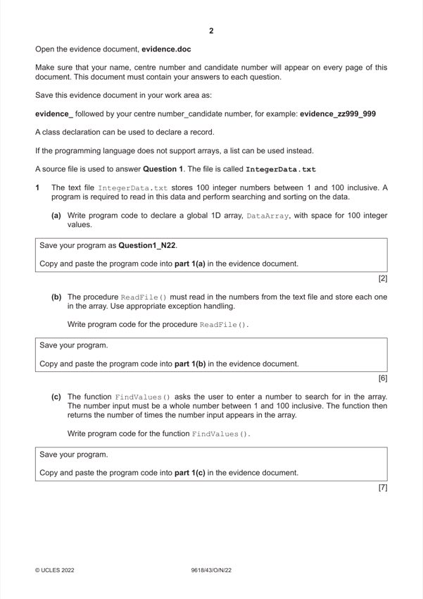

Question 1

Original paper page 2
Part 1(a) — solution
- (global) 1D (Integer) array DataArray
- 100 elements
Visual Basic (VB.NET)
Dim DataArray(99) As Integer
Python
DataArray = [0 for I in range (100)]
Mark points
- (global) 1D (Integer) array DataArray
- 100 elements
Part 1(b) — solution
- Procedure ReadFile() header (and end where appropriate)
- opening file IntegerData.txt (for read)
- looping through the 100 elements // looping to end of file
- reading each (and all) value from file and storing in array
- closing file (in appropriate place)
Mark points
- Procedure ReadFile() header (and end where appropriate)
- opening file IntegerData.txt (for read)
- looping through the 100 elements // looping to end of file
- reading each (and all) value from file and storing in array
- closing file (in appropriate place)
Part 1 — solution
- Exception Handling (for opening the file, or for reading values from the
- …with appropriate catch and output messages
Python
def ReadFile():
global DataArray
try:
TextFile = "IntegerData.txt"
File = open(TextFile, 'r')
for X in range(0, 100):
DataArray[X] = File.readline()
DataArray[X].rstrip('\n')
DataArray[X] = int(DataArray[X])
File.close()
except IOError:
print("Count not find file")
2022 Page 3 of 23
9618/43 Cambridge International AS & A Level – Mark Scheme October/November
PUBLISHED 2022
Mark points
- Exception Handling (for opening the file, or for reading values from the
- …with appropriate catch and output messages
Part 1(b) — solution
- Dim TextFile As String = "IntegerData.txt"
- For X = 0 To 99
- DataArray(X) = FileReader.ReadLine()
Visual Basic (VB.NET)
Sub ReadFile()
try
Dim TextFile As String = "IntegerData.txt"
Dim FileReader As New
System.IO.StreamReader(TextFile)
For X = 0 To 99
DataArray(X) = FileReader.ReadLine()
Next
FileReader.Close()
Catch ex As Exception
Console.WriteLine("Invalid file")
End Try
End Sub
Mark points
- Dim TextFile As String = "IntegerData.txt"
- For X = 0 To 99
- DataArray(X) = FileReader.ReadLine()
Part 1(c) — solution
- Function FindValues() (and end where appropriate) and input of data
- …validation/casting(/storing as) of input as integer
- …validation of input between 1 and 100 (inclusive)
- looping through all 100 array elements…
- …comparing input to each array element…
- …initialising counter to 0 and then adding 1 each time it is found…
- Returning the total
Mark points
- Function FindValues() (and end where appropriate) and input of data
- …validation/casting(/storing as) of input as integer
- …validation of input between 1 and 100 (inclusive)
- looping through all 100 array elements…
- …comparing input to each array element…
- …initialising counter to 0 and then adding 1 each time it is found…
- Returning the total
Part 1(c) — solution
- DataToFind = -1
- DataToFind = int(input("Enter a number between 1
- Total = 0
- if DataArray[X] == DataToFind:
- Total = Total + 1
- DataToFind = Console.ReadLine()
- Loop Until (DataToFind >= 1 And DataToFind <= 100)
- Dim Total As Integer = 0
- For X = 0 To 99
- If DataArray(X) = DataToFind Then
- Total = Total + 1
Visual Basic (VB.NET)
Function FindValues()
Dim DataToFind As Integer
Do
Console.WriteLine("Enter a number between 1 and 100")
DataToFind = Console.ReadLine()
Loop Until (DataToFind >= 1 And DataToFind <= 100)
Dim Total As Integer = 0
For X = 0 To 99
If DataArray(X) = DataToFind Then
Total = Total + 1
End If
Next
Return Total
End Function
Python
def FindValues():
global DataArray
DataToFind = -1
while(DataToFind < 1 or DataToFind > 100):
DataToFind = int(input("Enter a number between 1
and 100"))
Total = 0
for X in range(0, 99):
if DataArray[X] == DataToFind:
Total = Total + 1
return Total
Mark points
- DataToFind = -1
- DataToFind = int(input("Enter a number between 1
- Total = 0
- if DataArray[X] == DataToFind:
- Total = Total + 1
- DataToFind = Console.ReadLine()
- Loop Until (DataToFind >= 1 And DataToFind <= 100)
- Dim Total As Integer = 0
- For X = 0 To 99
- If DataArray(X) = DataToFind Then
- Total = Total + 1
Part 1(d)(i) — solution
- Calling ReadFile() and then FindValues() (in the main program)
- storing/using return value from FindValues() …
- …outputting return value with appropriate message
Visual Basic (VB.NET)
Sub Main()
ReadFile()
Dim ReturnValue As Integer = FindValues()
Console.WriteLine("The number was found " & ReturnValue
& " times")
End Sub
Python
ReadFile()
print("The number appears " + str(FindValues()) + "
times")
Mark points
- Calling ReadFile() and then FindValues() (in the main program)
- storing/using return value from FindValues() …
- …outputting return value with appropriate message
Part 1(e) — solution
- procedure declaration (and end where appropriate) and
- correct outer loop …
- … correct inner loop …
- … swapping all elements if in incorrect order
Python
def BubbleSort():
global DataArray
N = 100
for I in range(N-1):
for J in range(0, N-I-1):
if DataArray[J] > DataArray[J+1]:
DataArray[J], DataArray[J+1] =
DataArray[J+1], DataArray[J]
#main
ReadFile()
print("The number appears " + str(FindValues()) + "
times")
BubbleSort()
print(DataArray)
Mark points
- procedure declaration (and end where appropriate) and
- correct outer loop …
- … correct inner loop …
- … swapping all elements if in incorrect order
Part 1(e) — solution
- Dim Outer As Integer = 100 - 1
- Inner = 0
- Swap = False
- Temp = DataArray(Inner)
- DataArray(Inner) = DataArray(Inner + 1)
- DataArray(Inner + 1) = Temp
- Swap = True
- Inner = Inner + 1
- Loop Until Inner = Outer
- Outer = Outer - 1
- Loop Until Swap = False Or Outer = 0
- For X = 0 To 99
- Dim ReturnValue As Integer = FindValues()
Visual Basic (VB.NET)
Sub Bubblesort()
Dim Outer As Integer = 100 - 1
Dim Swap As Boolean
Dim Inner As Integer
Dim Temp As Integer
Do
Inner = 0
Swap = False
Do
If DataArray(Inner) > DataArray(Inner + 1) Then
Temp = DataArray(Inner)
DataArray(Inner) = DataArray(Inner + 1)
DataArray(Inner + 1) = Temp
Swap = True
End If
Inner = Inner + 1
Loop Until Inner = Outer
Outer = Outer - 1
Loop Until Swap = False Or Outer = 0
For X = 0 To 99
Console.WriteLine(DataArray(X))
Next
End Sub
Sub Main()
ReadFile()
Dim ReturnValue As Integer = FindValues()
Console.WriteLine("The number was found " &
ReturnValue & " times")
Bubblesort()
End Sub
Mark points
- Dim Outer As Integer = 100 - 1
- Inner = 0
- Swap = False
- Temp = DataArray(Inner)
- DataArray(Inner) = DataArray(Inner + 1)
- DataArray(Inner + 1) = Temp
- Swap = True
- Inner = Inner + 1
- Loop Until Inner = Outer
- Outer = Outer - 1
- Loop Until Swap = False Or Outer = 0
- For X = 0 To 99
- Dim ReturnValue As Integer = FindValues()
Part 1 — solution
- IF Root = -1 THEN
- IF ArrayNodes[Root,1] = ValueToFind THEN
- IF ArrayNodes[Root, 1] = -1 THEN
- if Root == -1:
- elif ArrayNodes[Root][1] == ValueToFind:
- elif ArrayNodes[Root][1] == -1:
Python
def SearchValue(Root, ValueToFind):
global ArrayNodes
if Root == -1:
return -1
elif ArrayNodes[Root][1] == ValueToFind:
return Root
elif ArrayNodes[Root][1] == -1:
return -1
if(ArrayNodes[Root][1] > ValueToFind):
return SearchValue(ArrayNodes[Root][0], ValueToFind)
if(ArrayNodes[Root][1] < ValueToFind):
return SearchValue(ArrayNodes[Root][2], ValueToFind)
2022 Page 19 of 23
9618/43 Cambridge International AS & A Level – Mark Scheme October/November
PUBLISHED 2022
Mark points
- IF Root = -1 THEN
- IF ArrayNodes[Root,1] = ValueToFind THEN
- IF ArrayNodes[Root, 1] = -1 THEN
- if Root == -1:
- elif ArrayNodes[Root][1] == ValueToFind:
- elif ArrayNodes[Root][1] == -1: